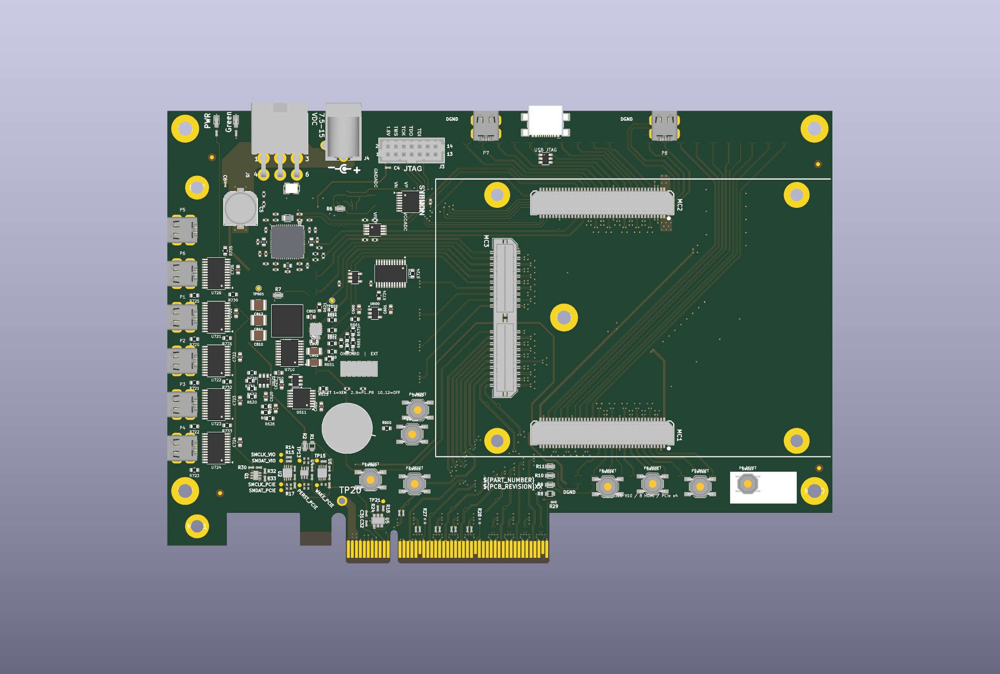
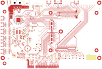

BRK8310-derived carrier · AU25P
HDMI Extension Board.
Eight HDMI ports. Shared power and JTAG. PCIe ×4.
V10 placement · V9 electrical design
- 8
- HDMI ports
- 6
- copper layers
- 351
- circuit components

Loading 3D…

Loading schematic…
Click a part to inspect it.Placement draft · 776 connections remain unrouted
Components
351 electrical parts, matched to the schematic and PCB.
| Reference | Value / part | Circuit |
|---|
No matching parts.
15 PCB-only features
Eleven mounting holes and four fiducials. These are separate from the 351 schematic components.
Files
Saved V10 sources and review exports.
Sources and check results
One matching revision. The V10 PCB and paired one-page schematic retain the V9 electrical design. The component table uses the same saved references, values, footprints, netlist and PCB positions. There are 351 electrical components plus 15 mechanical/fiducial footprints.
All eight HDMI positions, six layers, 294 retained electrical placements, 5,735 routing objects, 12 copper graphics and 11 zones/cached fills are preserved. No new routing or refill was performed. The 57 new JTAG placements introduce no contacts in the recorded geometry/copper screen. Existing retained contact records remain: 282 isolated-route, 69 cached-fill and 14 copper-graphic contacts. Five inherited ignored DRC categories remain disclosed in the downloadable check summary. Routing, DRC/copper cleanup, assembly, timing and powered operation remain pending.
3D scope. The interactive model uses native board geometry and independently authored nominal bodies at the saved positions. Native renders show the saved CAD appearance. All 330 assigned native component models resolve locally; the public review ZIP omits all model payloads. The 21 electrical copper-only features and 15 mechanical/fiducial references remain included in the board data. These views do not establish assembled fit.
300 components have explicit manufacturer-number fields and 348 have datasheet links. Rows without an explicit manufacturer number retain the saved source value. Three inherited generic parts, C700/R700/R701, retain unspecified manufacturer MPN/datasheet selections. No firmware or powered-operation validation is added by this review.
Reference: Opal Kelly BRK8310 A01. Manufacturer references and the shared-interface adaptation are identified directly on the schematic.